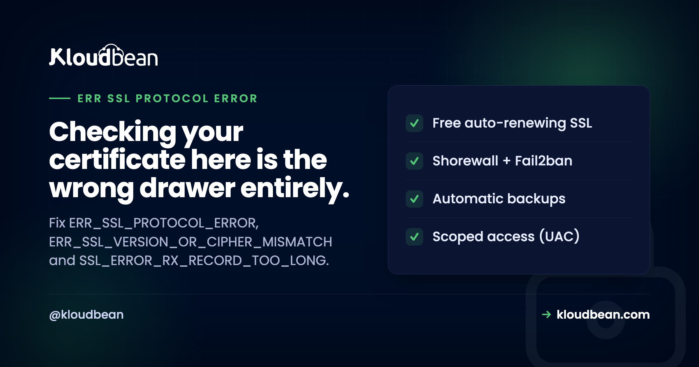
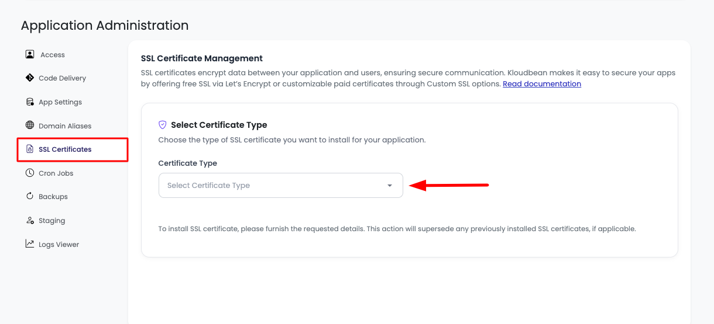
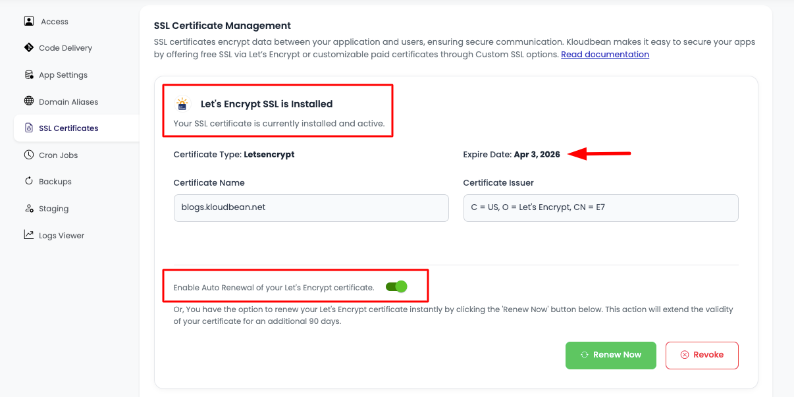

ERR_SSL_PROTOCOL_ERROR: The Handshake Failed, Not the Certificate

There are two completely different families of HTTPS failure and they get treated as one. A certificate error means the handshake succeeded, the server presented its identity, and your browser looked at that identity and refused it. A protocol error means the handshake never got that far: the two sides could not agree on a version or a cipher, or one of them was not speaking TLS at all. ERR_SSL_PROTOCOL_ERROR is the second kind. So if you are here after checking that your certificate is valid and unexpired, that was a reasonable thing to check and it was never going to be the answer.
Test which TLS versions your server actually accepts with openssl s_client, one version at a time. If nothing above TLS 1.1 is supported, that is your answer, because current browsers refuse the older versions: set ssl_protocols TLSv1.2 TLSv1.3; and reload. If TLS 1.2 works from the command line but the browser still fails, suspect local interference such as antivirus HTTPS scanning, or Chrome attempting QUIC. And if you are seeing SSL_ERROR_RX_RECORD_TOO_LONG, you are almost certainly requesting https:// against a port that serves plain HTTP.
Which family are you in?
Sorting this first saves the most time, because the two classes share no fixes at all.
| Handshake failure | Certificate rejection | |
|---|---|---|
| What happened | The two sides never agreed how to talk | They agreed, then the identity was refused |
| Typical messages | ERR_SSL_PROTOCOL_ERROR, ERR_SSL_VERSION_OR_CIPHER_MISMATCH, SSL_ERROR_RX_RECORD_TOO_LONG | ERR_CERT_DATE_INVALID, ERR_CERT_AUTHORITY_INVALID, ERR_CERT_COMMON_NAME_INVALID |
| Look at | TLS versions, cipher suites, which port, local interception | Expiry, issuer, hostname, chain |
| Renewing the certificate helps? | No | Often yes |
If your message contains CERT, you are in the right-hand column and our SSL certificate errors guide is the article you want. Everything below is the left-hand column.
One wrinkle worth knowing: Chrome's user-facing wrapper text, "This site can't provide a secure connection", is shown for both families. So the friendly message tells you nothing, and the code underneath it tells you everything. Chrome shows that code in smaller text on the same page.
Step one: ask the server what it actually supports
This single loop resolves a large share of cases. It tries each TLS version in turn and reports whether the server will negotiate it:
for v in tls1 tls1_1 tls1_2 tls1_3; do
printf "%-8s " "$v"
echo | openssl s_client -connect example.com:443 -servername example.com -$v 2>/dev/null \
| grep -q "Cipher is" && echo supported || echo "not supported"
doneRead the result against this:
| Result | Diagnosis | Fix |
|---|---|---|
| Only tls1 and tls1_1 supported | Server too old for current browsers | Enable TLS 1.2 and 1.3 |
| Nothing supported at all | Not speaking TLS on that port | Check the port and the listener |
| tls1_2 supported, browser still fails | Local interference or QUIC | Antivirus, proxy, Chrome flags |
| tls1_3 only | Unusually strict, older clients excluded | Also enable 1.2 |
| All supported, one browser fails | Cipher overlap or interception | Compare cipher lists |
The -servername flag matters and is easy to leave off. It sends SNI, which tells a server hosting several sites which one you want. Without it you may be testing a different virtual host entirely, and getting a confidently wrong answer.
Cause one: the server is too old for current browsers
The most common genuine cause. TLS 1.0 and 1.1 have been removed from current browsers, so a server still offering only those has effectively stopped serving HTTPS to anyone modern, while continuing to work perfectly in whatever old tool you are testing with.
The tell is that it affects everybody at once and started without any change on your side, because the change happened in browsers. Check and fix:
# What is configured now?
sudo grep -rn "ssl_protocols\|ssl_ciphers" /etc/nginx/ssl_protocols TLSv1.2 TLSv1.3;
ssl_prefer_server_ciphers off;sudo nginx -t && sudo systemctl reload nginxssl_prefer_server_ciphers off is the modern recommendation rather than an oversight: with TLS 1.3 the client's preference ordering is generally the better one to honour, since clients know their own hardware acceleration.
Cause two: no shared cipher
Both sides support TLS 1.2, and they cannot find a cipher suite they both accept. This produces ERR_SSL_VERSION_OR_CIPHER_MISMATCH, which is helpfully specific for once.
It happens from either direction. An ancient server offering only ciphers browsers have dropped, or a freshly hardened server restricted to such a narrow list that some legitimate clients have nothing in common with it.
# Which ciphers does the server actually offer?
nmap --script ssl-enum-ciphers -p 443 example.com
# Or with openssl, showing what gets negotiated
echo | openssl s_client -connect example.com:443 -servername example.com 2>/dev/null | grep -E "Protocol|Cipher"The timing question settles the direction. If it broke immediately after someone tightened the TLS configuration, the list is too narrow and should be widened to a sensible modern set. If it has been failing for a long time on an old server, the list is too old.
The A+ trap
Worth a short detour, because this is where well-intentioned work causes outages. Public TLS scanners give letter grades, and chasing the top grade means disabling older protocol versions and trimming ciphers aggressively. That is genuinely correct for many sites and it is not free.
Every restriction excludes some client. Older Android devices, some corporate proxies and inspection appliances, payment terminals, embedded devices, and older API consumers all sit at various points on that curve. A configuration that scores perfectly and cannot be reached by eight percent of your customers has optimised the wrong number.
So decide deliberately rather than by grade. If you serve modern browsers only, harden freely. If you have an API with industrial clients, or customers on older devices, check your own logs for negotiated versions before you cut anything off. The scan grade is a proxy for security, not a measure of whether your audience can reach you.
The close cousin: ERR_SSL_VERSION_OR_CIPHER_MISMATCH
Chrome shows ERR_SSL_VERSION_OR_CIPHER_MISMATCH for the same two root causes this page already covers, so if you arrived on that string you are in the right place.
The first is no protocol version in common. Usually the server is stuck on TLS 1.0 or 1.1, which current browsers dropped, so the two sides have nothing to agree on. It runs the other way too: a client too old for a server that now requires TLS 1.2 as its minimum hits the same wall.
The second is no shared cipher suite, the case in "Cause two" above. One side's list and the other's do not overlap.
There is a third trigger specific to this string. It also appears when HTTPS is served with a broken or mismatched certificate and key, a keypair that does not line up.
The fix does not change. Enable TLS 1.2 and 1.3 on the origin with a modern cipher list, and if a certificate is involved, make sure the certificate and its private key actually match. Then confirm it the way this guide already shows: ask the server which versions it accepts with the openssl loop, and test the port with curl.
Cause three: HTTPS against a plain HTTP port
This one has a specific error message and a specific, slightly embarrassing cause, and recognising it saves real time.
SSL_ERROR_RX_RECORD_TOO_LONG, which Firefox shows, means the client began a TLS handshake and the server replied with something that was not a TLS record. Usually plain HTTP. The client tries to interpret an HTTP response as a TLS record, concludes the record is absurdly long, and gives up.
Almost always you are requesting https:// against a port that serves unencrypted HTTP. Classic when an application runs directly on 8080 or 3000 and someone tries to reach it over HTTPS:
# Fails: nothing is speaking TLS there
curl -sI https://example.com:8080
# Works: the port is plain HTTP
curl -sI http://example.com:8080If the second succeeds, you have your answer. The fix is not a certificate. Put a reverse proxy in front that terminates TLS on 443 and forwards to the application port, which is the standard arrangement described in our nginx reverse proxy guide.
The mirror image of this exists too. If a client speaks plain HTTP to a TLS port, nginx answers with a 400 and the message "The plain HTTP request was sent to HTTPS port", covered in 400 Bad Request. Same mismatch, opposite direction, completely different error text.
Cause four: something on the visitor's machine
If the command line succeeds and the browser fails, the problem is between the browser and the network, not on your server. Same triage as any browser-specific failure.
Antivirus HTTPS scanning. Security products that inspect encrypted traffic terminate your TLS connection and open their own, and when that interception mishandles a handshake you get a protocol error. Disable HTTPS or SSL scanning specifically, rather than the whole product, and retest. This is also the most common cause of ERR_CONNECTION_RESET, and for the same reason.
Chrome trying QUIC. Chrome may attempt HTTP/3 over QUIC, and some networks and middleboxes handle it badly. Visit chrome://flags, find Experimental QUIC protocol, set it to Disabled, and restart. If that resolves it, the fault is in the network path rather than in your server, though it is worth knowing since it affects real visitors.
A corporate proxy or inspection appliance. Managed networks frequently intercept TLS by policy. Testing from mobile data separates this in seconds.
A badly wrong clock. A system clock off by a long way can break a handshake as well as certificate validation. Rare, and worth thirty seconds of checking when nothing else fits.
A stale TLS state. Clearing the browser's cached HTTPS state occasionally helps after a server-side fix, since browsers remember more than the page. Try a private window first, which is faster and less destructive than clearing everything.
Cause five: SNI, when one address hosts several sites
Several sites on one IP address rely on SNI so the server knows which certificate and configuration to use. If SNI is absent or the requested name matches nothing, you may get a default virtual host with a different TLS configuration, and a failure that makes no sense against the site you thought you were testing.
# With SNI, which is what browsers send
echo | openssl s_client -connect example.com:443 -servername example.com 2>/dev/null | grep -E "Protocol|Cipher|subject="
# Without SNI, revealing the default virtual host
echo | openssl s_client -connect example.com:443 2>/dev/null | grep -E "Protocol|Cipher|subject="Two different answers means your test tooling and your browser are talking to different configurations, and any conclusion drawn without SNI is unreliable. Very old clients that do not send SNI at all will always reach the default host, which is worth knowing if you support them.
| Symptom | Likely cause | First check |
|---|---|---|
| Everyone affected, nothing changed on your side | Browsers dropped old TLS versions | Which versions the server offers |
| Broke right after security hardening | Cipher or version list too narrow | Widen to a modern set |
| SSL_ERROR_RX_RECORD_TOO_LONG | HTTPS requested on a plain HTTP port | Try the same URL over http |
| Works in curl, fails in the browser | Antivirus interception or QUIC | Disable HTTPS scanning, then QUIC |
| Fails only from the office | Corporate TLS inspection | Retest on mobile data |
| Only one site on a shared IP fails | SNI or virtual host mismatch | Compare with and without SNI |
| Only older devices affected | Hardening excluded them | Check negotiated versions in logs |
| Message mentions CERT | Certificate rejection, different class | Read the certificate guide instead |
Know what your visitors actually negotiate
Worth doing before you change any TLS configuration, and almost nobody does it. Log the negotiated protocol and cipher, then you are making decisions from data rather than from a scanner's opinion:
log_format tls '$remote_addr "$request" $status proto=$ssl_protocol cipher=$ssl_cipher';
access_log /var/log/nginx/access.log tls;# What are real visitors using?
awk '{for(i=1;i<=NF;i++) if($i ~ /^proto=/) print $i}' /var/log/nginx/access.log | sort | uniq -c | sort -rnIf that shows almost everything on TLS 1.3 with a little 1.2, you can harden confidently. If a meaningful share is on 1.2 with older ciphers, you now know what disabling them would cost. This is the difference between a deliberate decision and a hopeful one.
The operational half of ERR_SSL_PROTOCOL_ERROR
Nearly every server-side cause here is TLS configuration that has drifted: protocol versions that were current when the server was built and are now obsolete, cipher lists nobody has revisited, and a port serving plain HTTP where TLS was expected.
On Kloudbean, TLS configuration is maintained rather than frozen at build time, which is precisely the failure mode where a working server quietly stops serving current browsers. Free SSL is issued and renewed, and because nginx is set up to terminate TLS properly and forward to your application, the plain-HTTP-on-the-wrong-port mismatch is not something you assemble by hand. Cloudflare is available as a paid add-on and included for enterprise accounts, which adds a modern TLS front end for visitors while the origin connection is configured alongside it rather than bolted on.
The boundary, stated plainly: nobody else can decide how far to harden your ciphers, because only you know which clients you need to keep. And antivirus software on a visitor's laptop is beyond anyone's reach. What managed configuration removes is the slow drift into obsolescence.



More on ERR_SSL_PROTOCOL_ERROR
For the certificate-rejection family, fixing SSL certificate errors, and for the fundamentals, SSL and TLS explained. The handshake failure between a proxy and your origin is Cloudflare error 525. For the opposite scheme mismatch, 400 Bad Request. On antivirus interception in a different guise, ERR_CONNECTION_RESET. Firefox reports these same failures under its own names, and it keeps its own root store rather than reading your operating system's, which is why it often fails where Chrome succeeds: PR_END_OF_FILE_ERROR and PR_CONNECT_RESET_ERROR. For terminating TLS in front of an app, the nginx reverse proxy guide and custom domain and SSL. And on HSTS and related headers, the security headers guide.
The server layer, hardened for you.
Every server ships with a Shorewall firewall and Fail2ban, free auto-renewing SSL, automatic backups, and OS patching handled. Add IP access control or a Basic Auth gate when a site should not be public.
- ✓ Shorewall firewall
- ✓ Fail2ban
- ✓ OS patching handled
- ✓ Free SSL
- ✓ IP access control
- ✓ Automatic backups
Plans from $8/mo · Free migration assistance · Free trial
FAQ
What does ERR_SSL_PROTOCOL_ERROR mean?
It means the TLS handshake failed before any certificate could be evaluated, so the two sides never agreed on a protocol version or cipher suite, or one of them was not speaking TLS at all. That makes it a different class of problem from a certificate error, where the handshake completed and the browser then rejected the identity presented. Renewing a certificate will not fix it.
How is this different from a certificate error?
A certificate error, such as ERR_CERT_DATE_INVALID or ERR_CERT_AUTHORITY_INVALID, means the connection was established and the identity was refused, so you look at expiry, issuer, hostname, and chain. A protocol error means the connection was never established, so you look at TLS versions, cipher suites, which port is serving what, and local interception. If the code contains CERT, you are in the other family.
How do I check which TLS versions my server supports?
Loop openssl s_client over each version with the -servername flag so SNI is sent, and see which ones negotiate a cipher. If only TLS 1.0 and 1.1 succeed, current browsers will refuse your server, and setting ssl_protocols TLSv1.2 TLSv1.3; then reloading resolves it. Omitting -servername may test a different virtual host and give you a wrong answer.
What causes SSL_ERROR_RX_RECORD_TOO_LONG?
You are speaking TLS to something that answered in plain text, so the client tried to read an HTTP response as a TLS record. In practice you are requesting https:// against a port that serves unencrypted HTTP, which is common when an app runs directly on 8080 or 3000. Try the same URL over http://: if it works, put a reverse proxy in front to terminate TLS on 443.
Why does the site work in curl but fail in Chrome?
Something between the browser and the network is interfering. The two usual causes are antivirus software inspecting HTTPS, which terminates your connection and opens its own, and Chrome attempting QUIC on a network that handles it badly. Disable HTTPS scanning specifically rather than the whole security product, then try disabling Experimental QUIC protocol in chrome://flags.
Can hardening my TLS configuration break my site?
Yes, and it is a common cause of this error appearing right after security work. Every version and cipher you remove excludes some client, which can include older Android devices, corporate inspection appliances, payment terminals, and older API consumers. Log the negotiated protocol and cipher first so you know what disabling something would actually cost before you do it.
Why did HTTPS stop working when I changed nothing?
Because the change happened in browsers rather than on your server. TLS 1.0 and 1.1 have been removed from current browsers, so a server still offering only those stops working for everyone at roughly the same time while continuing to succeed in older tools. Enable TLS 1.2 and 1.3.
Does ERR_SSL_PROTOCOL_ERROR mean my site is insecure?
Visitors are not getting an insecure connection, they are getting no connection, since the browser refuses to proceed when it cannot negotiate one it trusts. The risk arrives if you resolve it by weakening your configuration, for example re-enabling obsolete protocol versions. Enabling TLS 1.2 and 1.3 is the correct direction; reaching backwards is not.
What is ERR_SSL_VERSION_OR_CIPHER_MISMATCH?
It is Chrome's message for the same handshake failure this page covers, shown when the browser and server share no TLS protocol version or no cipher suite. A server stuck on old TLS 1.0 or 1.1 is the usual trigger, though a broken or mismatched certificate and key can cause it too. Enable TLS 1.2 and 1.3 with a modern cipher list on the origin, then confirm with the openssl version check this guide describes.